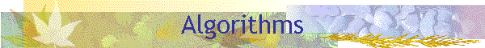

Home | PSI RAS | RCIS | S-Tree Lib

|
 Home | PSI RAS | RCIS | S-Tree Lib
|
The algorithm of search in an S(b)-tree is the same as for all other balanced trees, see Section 2. The algorithms of insertion, and deletion in an S(b)-tree are much more complicated then the ones for the B-trees. The difficulty here is that balancing of a modified node S involves additionally b neighboring nodes to the left, and b neighboring nodes to the right of S, while for B-trees insertion is performed without any neighbors, and for deletion at most one neighbor is required. Nevertheless we prove that an insertion, and a deletion of a key in an n-node S(b)-tree is logarithmic, that is can be performed in time less than or equal to C log(n), where constant C doesn’t depend on the number of nodes n in the tree, and is proportional to the locality parameter b.
Using the search algorithm the insertion first verifies whether the given key k is contained in the given tree T. If k is contained in T then the insertion is finished. Otherwise the search procedure will return a leaf S, and a key ki in it, before which the key k must be inserted. k is inserted to the given place of the node S, and the insertion proceeds to balancing of the tree. Balancing is performed by a special procedure, which is the common part of both the insertion and the deletion algorithms. Balancing starting from the enlarged leaf S balances all the nodes that lay on the path from the root of the tree to S. Similarly to the insertion, deletion begins with search. If the given a key k is not found in the given S(b)-tree T, then the deletion is finished. Otherwise the search returns a node S, and a key ki in it, that must be deleted. Note that S can be either an internal node or a leaf. The case when S is not a leaf can be easily reduced to the case of deletion from a leaf. If S is internal, we consider the sub-tree accessible via the reference Si+1, which is to the right of ki in S. Take the left most leaf S’ in the sub-tree, and the smallest key k’ in S’, and replace ki by k’ in S. Now we can proceed to the deletion of k’ from the leaf node S’. Now S is a leaf, and ki is the key that must be deleted from S. The deletion algorithm removes ki from S and starts balancing of the tree using the same balance algorithm used in insertion. The Balance() procedure is the main common part of the insertion and the deletion algorithms. The balancing begins from the leaf node S, which is given as an input parameter for the procedure. After working on the level of the current node S the procedure takes for balancing the direct parent of S. The process proceeds further up to the root node. The balanced tree is returned as the result of procedure Balance(). For any current node S the procedure decides to balance S if one of the following three conditions holds.
In the first case the procedure Balance_B() is used for balancing S. If Condition 2 holds for S then Balance_C() is used. And in the case of Condition 3 S is balanced by Balance_W(). When none of the conditions holds, Balance() skips the level. Each of the three procedures restores the structure of the S(b)-tree disturbed locally for one, two or three vertices of the current tree level. While correcting the structure of the tree on the current level, the algorithm should change also the ancestors of S. This can break in turn the balance conditions for the lower level nodes. Such breakdowns are also local, since not more than three lower level nodes can be changed: the direct parent of S, and two its neighbors to the left and to the right of S. Coming to the next level of the tree Balance() merges the modified nodes of the level, and balances them in a whole. The computation stops after coming through the tree root. Thus the algorithm examines all the nodes that lay on the path from the tree root to the leaf, containing the new key and balances them if necessary. Only these nodes and their neighbors (b to the left and b to the right) in the tree can be transformed by the algorithm. After balancing the structure of the S(b)-tree is restored provided that all modified nodes become well-formed nodes and all sweeps of the tree are incompressible.
|
|
Konstantin Shvachko: |